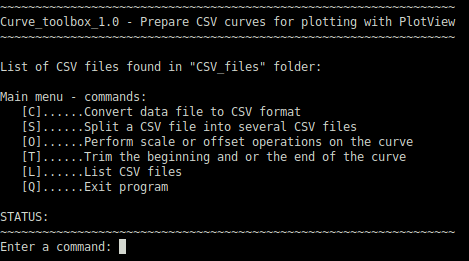
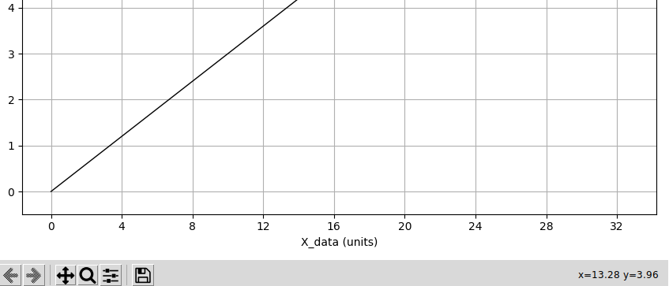
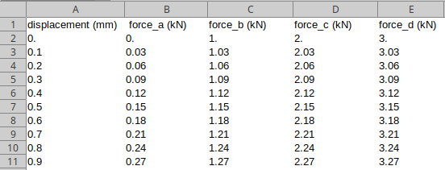
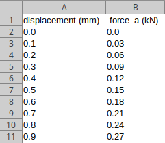
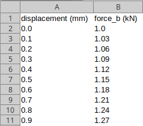
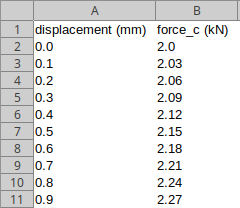
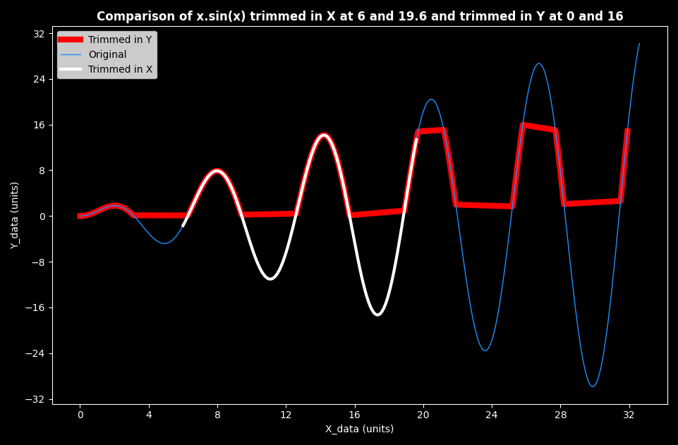

Curve toolbox
Presentation
In the folder tools, there is another Python script called curve_toolbox.py. The purpose of this script is to process the curve files before plotting them with PlotView.
The script curve_toolbox.py expects the CSV curve files in the folder tools/CSV_files. After processing, the modified CSV files is saved in the same folder with a modified file name. For example: trimmed_xsinx.csv after trimming the input file xsinx.csv. The folder test contains some examples of CSV files.
This script is a console script. Commands are selected through letters either lower case or upper case in brackets '[' and ']'. The CSV files in CSV_files are listed and referenced with numbers for selection.

It is recommended to plot a CSV curve before trimming it. Then it is possible to zoom to the desired area and get a good approximation of any point on the curve by moving the pointer onto a point: X and Y coordinates of the pointer on the lower right corner of the plot.

Split
The purpose of this function is to split a CSV file containing more than 2 columns in CSV files containing only 2 columns for plotting. All these files will have the same first column (or X data) and different second column (or Y data).
Here is an example of initial file selecting column 1 as X data:


Trim
The purpose of this function is to "cut" one end or both end of a curve base on X values or Y values;
Trimming only one side of the curve
It is possible by entering the desired value for one end and the first or last value for the other end.
Possible issues
The following image shows an issue with a curve having several identical Y values. In this case trimming in the Y axis with start = 0 and end = 16 cuts all the parts of the curve out of this range and not only the last peak for values above 16. In this case, trimming in X allows to "shorten" the curve.
